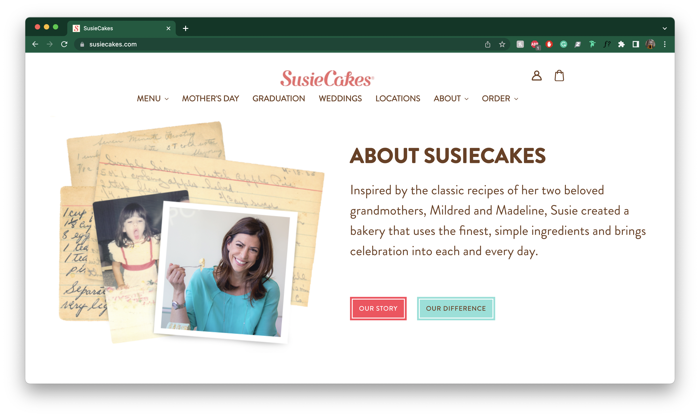
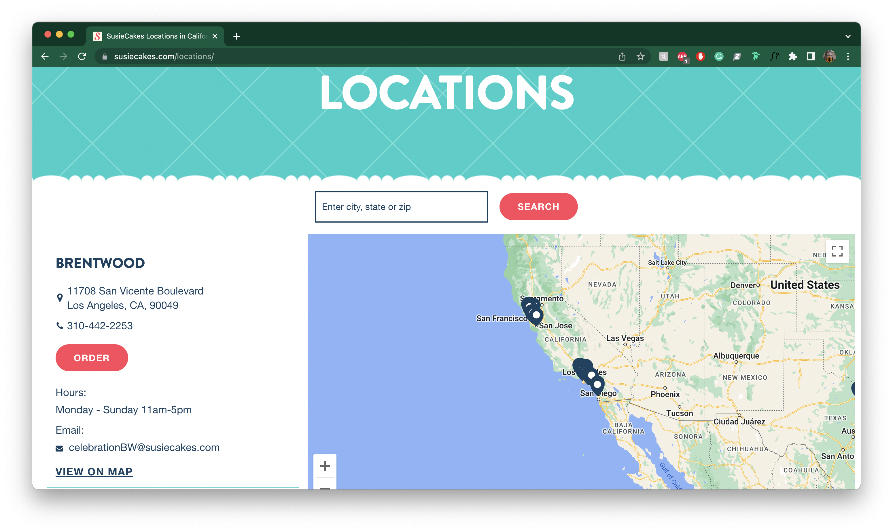

Final project proposal
Introduction
Jojos
Jojos is located in the heart of the Central Coast, San Luis Obispo, California. Jojos is a baking company that combines modern and classic flavors to create baked goods you'll keep on wanting to eat.
Target audience
The target audience of a bakery website is people who enjoy sweets, are passionate about baking, and inquire about ordering or catering special events such as a wedding, birthdays, and celebrations.
The primary goals of the consumer when they go to this website are to order, explore what the bakery has to offer, locations, contact the store, etc.
Comparative analysis
Milk Bar


Magnolia Bakery


SusieCakes
 Website content
Home
Welcome to Jojos!
[Menu items–cakes, pies, cookies, cupcakes, etc.]
Our Products
-
Jojo's Famous Double Chocolate Cake
Chocolate cake filled and covered in rich, dark chocolate buttercream frosting
6 inch - $+49.00
9 inch - $+66.00
-
Red Velvet Cake
One of Alexa's favorites! Deep red cake lightly flavored with cocoa, filled & topped with traditional cream cheese frosting.
6 inch - $+49.00
9 inch - $+66.00
-
Triple Berry Pie
A Jojo speciality, flaky pie crust filled with raspberries, blackberries, and blueberries
$50.00
-
Apple Pie
America's favorite pie, flaky crust filled with cinnamon apples
$50.00
-
Burst of Color Cake
funfetti cake filled and covered in pink vanilla buttercream
6 inch - $+49.00
9 inch - $+66.00
-
Chocolate Chip Cookies
a classic chocolate chip cookie that we all know and love
$3.00 per cookie
-
Carrot Cake
baked with chopped walnuts layered and topped with traditional cream cheese frosting.
6 inch - $+49.00
9 inch - $+66.00
-
Heaven on Earth Cookies
crispy cinnamon cookies with assorted sprinkles
$3.00 per cookie
[Cake with a slice cut out, can see cake layers and frosting]
About
Jojos' founder, Alexa Griffin, grew up in the San Francisco Bay Area, where she discovered her love of baking through her grandmother, Joanne, who she calls Jojo. Every Thanksgiving Alexa would go to her grandmother's house the day before and they would make all the pies for Thanksgiving together. Baking was one of the special things Alexa has with her grandmother and she continues to learn that there is a right way to do things and a wrong way. Alexa always dreamed of owning her own baking company using the recipes she learned from her grandmother. Her grandmother made everything from scratch, she has never seen her use a single cake mix in her life. That is exemplified in the taste of the goods as you get a little bit of home in each bite. That is what Jojos' strive to give everyone, classic flavors and a little bit of home in each bite.
[Alexa Griffin and her grandmother Joanne]
Contact
jojosbakery@gmail.com
(650)123-4567
Visit Us
123 Mustang Way, San Luis Obispo, CA, 93405
[San Luis Obispo storefront location]